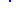
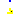

This package includes the internal components of the library, that can be used to describe new CA models.
| Name | Description |
|---|---|
| CAport | |
|  AdditionalRule | |
|  Animation | |
| InputRegion | Input Regionregion of FROM.space CA is used as input for TO.space CA |
| OutputRegion | |
| OutputRegionM | |
| ExtInitRegion | |
| ExtInputRegion |
The CS model corresponds to the extenal object, defined in C, that is used to represent the cellular space.
The constructor and destructor functions are automatically executed when instatiating this class, and their C code is contained in the cellularautomatalib.c file.
Extends from ExternalObject.
 CellularAutomataLib.Components.CellSpace
CellularAutomataLib.Components.CellSpaceThis model represents a multi-dimensional cellular automaton. It includes a CS model to represent the cellular space and the functions (Initial, Default and Rule) required to simulate the automaton.
The parameters of the model are:
The simulation of the automaton is as follows:
| Name | Description |
|---|---|
| X | Number of rows |
| Y | Number of columns |
| Z | Number of columns |
| hex | Hexagonal 2D lattice |
| neighborhood[:, :] | |
| n_inputs | number of inputs (from other CA or external) |
| wrapped_borders | mask for XYZ wrapped borders |
| Tstep | Duration time for each step/cicle |
| initial_step | Time for starting the cicles |
| max_step | Maximum number of steps |
| init_cells[:, :] | |
| name |
| Name | Description |
|---|---|
| Space |
Connector used to combine multiple CA models. It is used to share a cellular space (CellSpace) with other models such as Animation, AdditionalRule or interface models.
| Name | Description |
|---|---|
| space |
CellularAutomataLib also includes the AdditionalRule model to facilitate the application of multiple transition rules to the same cellular space. This model can be used to perform an additional transtition for the cells, simultaneously to the transition already performed by the CellSpace model, or to sequentially apply different transition rules to the same space while maintaining the evolution of the cells in the space among different transitions.
Note that for simultaneous transitions, the order in which the different rules are applied depends on the Modelica simulation algorithm.
In order to sequentially apply the additional rule, the model includes the initial_step, Tstep and max_step parameters to define the time to start the execution of the rule, the interval between steps and the maximum number of steps to be performed (these parameters are analogous to those in the CellSpace model).
The AdditionalRule model includes an Initial function, that can be used to re-initialize the state of the selected cells, and a Rule function, that corresponds to the transition function. Both functions need to be defined using external C code and redeclared when instantiating the model.
| Name | Description |
|---|---|
| Tstep | Duration time for each step/cicle |
| initial_step | Time for starting the cicles |
| max_step | Maximum number of steps |
| init_cells[:, :] |
| Name | Description |
|---|---|
| Space |
CellularAutomataLib supports the generation of a graphical animation during the simulation, to display the evolution of the cellular space. If desired, the graphical animation can be generated using the Animation model connected to the CellSpace (using the CAport connectors in both models). The Raylib library is used to generate the graphics of the animation.
The Animation model includes parameters to describe the size of the animation window (WindowHeigth and WindowWidth) and to describe the number of cells that will be displayed in each dimension (WindowX, WindowY, WindowZ). Usually, the number of displayed cells will be equal to those of the cellular space, but this model also supports the representation of aggregate states of multiple cells of the cellular space as a single cell in the animation.
The model also includes three functions used to manage the animation: SetDisplayFunction is used to associate a display function with the cellular space; StepPlot is the function used to actually display the state of the cells during each step; and InitAnimation that is used to initialize the animation window.
The animation is initialized using the parameters of the model and the InitAnimation function. The user needs to redeclare the SetDisplayFunction with his own display function to define how the state of the cells will be displayed. After that, the animation is periodically updated, following the intervals indicated by the Tstep and intial_step parameters, using the StepPlot function. Currently, only one animation window per simulation is supported.
| Name | Description |
|---|---|
| Tstep | Duration time for each step/cicle |
| initial_step | Time for starting the cicles |
| max_step | Maximum number of steps |
| WindowWidth | Window width |
| WindowHeight | Window height |
| WindowX | number of animation cells in the X axis |
| WindowY | number of animation cells in the Y axis |
| WindowZ | number of animation cells in the Z axis |
| Vector | 0 scalar, 1 vector |
| displayDelay | Animation update delay (in microseconds) |
| name |
| Name | Description |
|---|---|
| Space |
Input Regionregion of FROM.space CA is used as input for TO.space CA
CellularAutomataLib supports describing models composed of several cellular spaces. The communication between spaces is described using the Input Region model (InputRegion).
The combination of cellular spaces is performed by translating the state of some cells (e.g., a region) from one space as inputs for the another. The prototype of the Rule function in C includes a vector of the received inputs, in order to allow the user to manage them during the transition. Each Input Region has associated an input identifier, set using the parameter input_id, that can be used as index for the vector of inputs of the transition function.
The Input Region model has two interface ports: FROM and TO. These interface ports are used to connect to the involved cellular spaces. The state of the cell [i, j]|i ∈ [XFromRange[1],XFromRange[2]], j ∈ [YFromRange[1],YFromRange[2]], and k ∈ [ZFromRange[1],ZFromRange[2]] in the FROM space, is translated using the SetInput function into an input for the cell [l, m, n]|l ∈ [XTo, XTo + XFromRange[2]-XFromRange[1]], m ∈ [YTo, YTo + YFromRange[2] - YFromRange[1]] , m ∈ [ZTo, ZTo + ZFromRange[2] - ZFromRange[1]] in the TO space. XFromRange, YFromRange, ZFromRange, XTo, YTo, and ZTo are parameters of the model. The communication is started at time = comm_start and is performed every comm_rate time.
The function void SetInput(void* Fspace, int Fx, int Fy, int Fz, void* Tspace, int Tx, int Ty, int Tz, int input_id) from the draft.c file can be used to redeclare the SetInput function of this model.
| Name | Description |
|---|---|
| input_id | ID for input in TO.space model |
| XFromRange[2] | FROM region in X |
| YFromRange[2] | FROM region in Y |
| ZFromRange[2] | FROM region in Z |
| XTo | TO region in X |
| YTo | TO region in Y |
| ZTo | TO region in Z |
| comm_start | Time for starting communication |
| comm_rate | Communication sampling interval |
| Name | Description |
|---|---|
| FROM | Input CA model |
| TO | Output CA model |
The Output Region model can be used to observe the state of the cells in a region of the automata connected to the FROM port. The state is translated into an output Real signal that can be used by other Modelica models. The region of selected cells is defined by the coordinates defined by XFromRange, YFromRange and ZFromRange.
This model has been divided in two, the OutputRegion and the OutputRegionM models.
The OutputRegion model contains an output Real port, y. Depending on the value of the parameter Output_type, the state is observed in different ways:
The value of the state is translated into a Real value using the ExtOutput function, that can be redeclared using the double ExtOutput(void* space, int x, int y, int z) function included in draft.c.
| Name | Description |
|---|---|
| XFromRange[2] | FROM region in X |
| YFromRange[2] | FROM region in Y |
| ZFromRange[2] | FROM region in Z |
| Output_type | Output observation method |
| output_rate | Output sampling interval |
| name | output |
| Name | Description |
|---|---|
| FROM | Reference to cellular space |
| y |
The Output Region model can be used to observe the state of the cells in a region of the automata connected to the FROM port. The state is translated into an output Real signal that can be used by other Modelica models. The region of selected cells is defined by the coordinates defined by XFromRange, YFromRange and ZFromRange.
Depending on the value of the parameter Output_type, the state is observed in different ways:
The OutputRegionM model contains a matrix of output Real ports, yM[XFromRange[2]-XFromRange[1]+1, YFromRange[2]-YFromRange[1]+1, ZFromRange[2]-ZFromRange[1]+1]. The value of the state of the i,j,z-th cell in the space is assigned to yM[l,m,n] (where l=1:(XFromRange[2]-XFromRange[1]+1), m = 1:(YFromRange[2]-YFromRange[1]+1) and n=1:(ZFromRange[2]-ZFromRange[1]+1)). Since the size of yM can be the size of the cellular space, and the matrix is defined in Modelica, the automatic translation of the model has to manage the definition of yM affecting the scalability and the performance of the simulation. This has to be taken into account when including the OutputRegionM model in CA models.
The value of the state is translated into a Real value using the ExtOutput function, that can be redeclared using the double ExtOutput(void* space, int x, int y, int z) function included in draft.c.
| Name | Description |
|---|---|
| XFromRange[2] | region initial column |
| YFromRange[2] | region final column |
| ZFromRange[2] | region final column |
| output_rate | Output sampling interval |
| Name | Description |
|---|---|
| FROM | Reference to cellular space |
| yM[XFromRange[2] - XFromRange[1] + 1, YFromRange[2] - YFromRange[1] + 1, ZFromRange[2] - ZFromRange[1] + 1] |
The ExtInitRegion model can be used to set the initial state of a region of cells in the space using the value of an external signal. The model has an input port, named u, where a Real signal is received, and a port named TO that connects to the CA. The value of u is translated, using the ExtInit function, into a cell state that will be used to initialize the cells in the region of the connected automaton. If u is not connected to another model its value is set to 0.
The region is defined by the coodirnates defined by parameters XRange, YRange and ZRange.
The ExtInit function can be redeclared using the void ExtInit(void* space, int x, int y, int z, double value) function included in draft.c.
| Name | Description |
|---|---|
| XRange[2] | X region |
| YRange[2] | Y region |
| ZRange[2] | Z region |
| Name | Description |
|---|---|
| u | External input value |
| TO | Reference to the cellular space |
Similarly to the Input Region model, the model ExtInputRegion can be used to set an input to a region of cells in the automata. In this case the input is generated using an external signal instead of the state of the cells of other automata.
This model receives an external Real input signal through port u, which is used as input for a region of cells in the automata connected to port TO. Similarly to the other interface models, the region is defined by the coordinates declared using parameters XToRange, YToRange and ZToRange.
The input is assigned to the position input_id of the vector of inputs, that is available for the user in the transition function. The external signal, u, can be observed using the following methods (defined by the parameter Input_type), in order to be converted into an input:
The signal is translated into an input using the function ExtInput, that can be redeclared using the void ExtInput(void* space,int x, int y, int z, double value, int input_id) function included in draft.c.
| Name | Description |
|---|---|
| input_id | ID for input in TO.space model |
| XToRange[2] | TO region in X |
| YToRange[2] | TO region in Y |
| ZToRange[2] | TO region in Z |
| Input_type | Input observation method |
| q_t | Quantum/threshold/interval value |
| q_aux | Detection value threshold |
| start_preU | start value for preU |
| start_above | start value for above |
| start_below | start value for below |
| start_sample | start sampling time |
| Name | Description |
|---|---|
| u | |
| TO |